眼睛
自己画眼睛贴图：导出虹膜、剪贴上色再导回
参考收进 Eye Ref，再拖进 PureRef
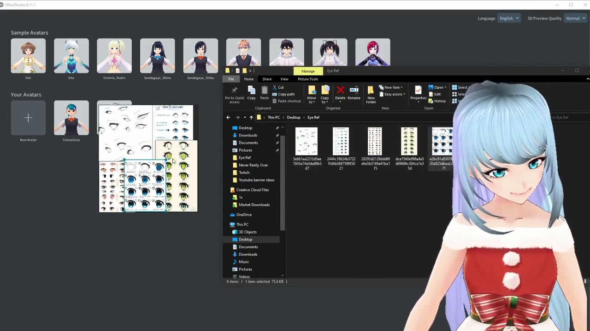
口播先在 Pinterest 搜 anime eyes，把想画的图存下来。画面上文件夹不叫 eye references，资源管理器停在桌面的 Eye Ref，里面是眼睛缩略图。PureRef 里已经拖进了线稿、一张标题能看出 How to color eyes 的分步图，还有成排的蓝眼睛和绿眼睛。口播说按住 Ctrl 和 Alt 再拖，是把单张参考缩小；按住右键拖，是挪整块画布。这些快捷键画面上没有标出来。
在脸部编辑器里打开虹膜贴图
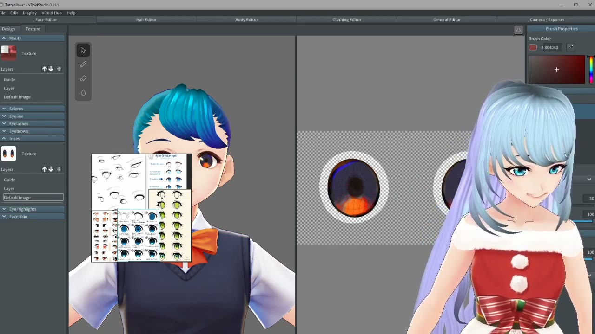
正在改的是 Your Avatars 里蓝发、白衬衫、橙领结那只。口播说这是之前长发教程用的例子。进来时 Design 列表里光标停在 Eyes，再点旁边的 Texture。左边从上到下是 Mouth、Scleras、Eyeline、Eyelashes、Eyebrows、Irises、Eye Highlights、Face Skin。Mouth 先是展开的，口播把那块浅色贴图叫舌头，这次不改。展开 Irises，点里面的贴图，右边出现两只并排的虹膜：上沿偏蓝，下沿橙红，中间发黑，底是透明格子。画布左边竖条是箭头、笔、橡皮、滴管。口播说可以就在 VRoid 里画，但笔太少，所以要导出；Paint Tool SAI 或其他软件也行，示范用的是 Photoshop。
右键默认图层，导出成 TestModelEyeTexture
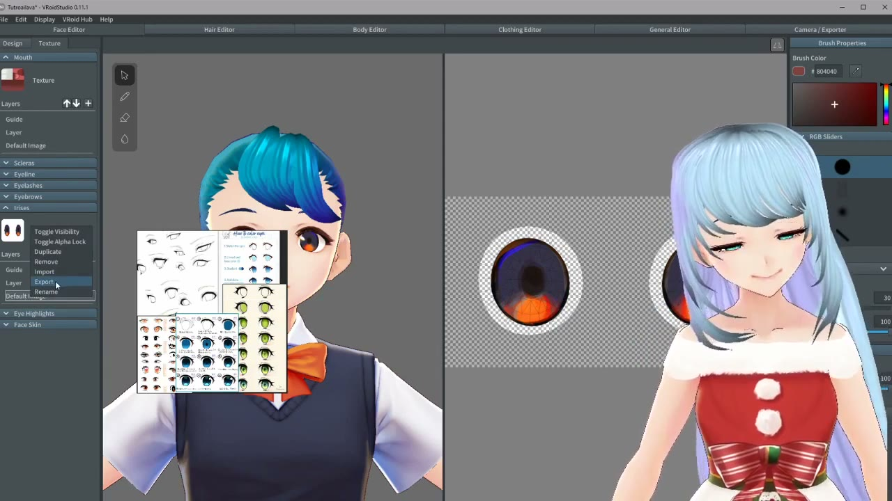
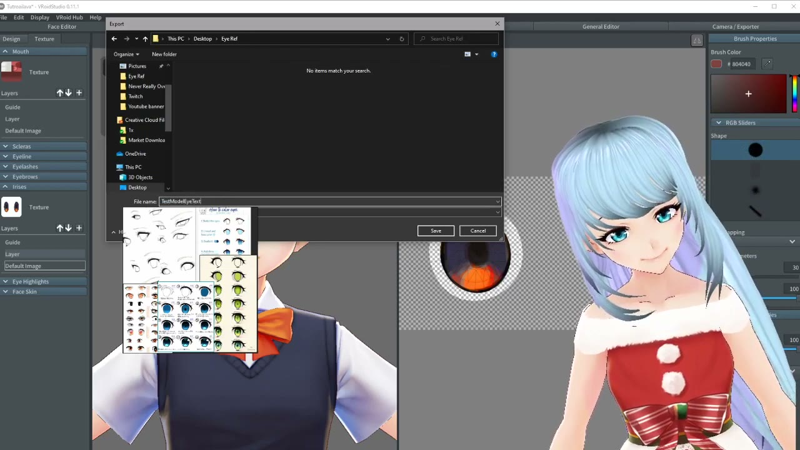
在虹膜那一行右键。菜单里能看清的是 Toggle Visibility、Toggle Alpha Lock、Duplicate、Remove、Import、Export、Rename，点 Export。保存位置是刚才的 Eye Ref。文件名框比较窄，先露出 TestModelEyeText；进 Photoshop 之后标签写全是 TestModelEyeTexture.png。右边笔刷仍停在一块暗红色上，这不是眼睛的颜色，不要跟着调。
Photoshop 直接打开这张图
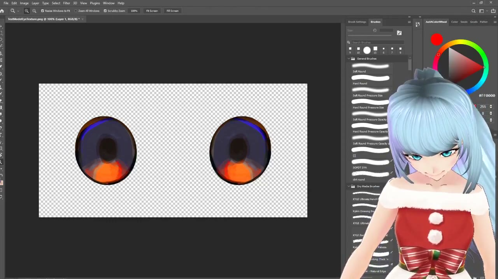
开始菜单里点的是 Adobe Photoshop 2021。用打开，回到桌面的 Eye Ref，不要新建一张空白画布。打开后再加一层，原来的留在下面。口播说会把旧图层锁上；这一步画面上还看不出锁，下一张图层面板才能对上两层的关系。
右键 Mode，勾上 Always On Top
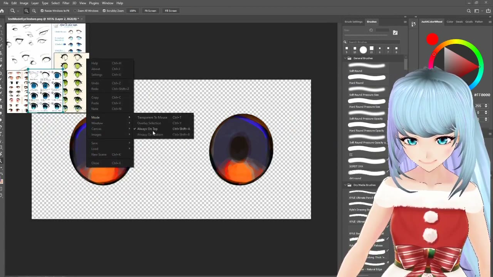
画之前把 PureRef 挪到贴图上。在参考窗的空白处右键，进 Mode，勾 Always On Top，它就会一直盖在 Photoshop 上面。这时文档标签已经是 Layer 2，两只虹膜仍是原来的蓝和橙，还没开始铺绿。右边色轮停在纯红，那是还没选眼睛的颜色。
新图层剪贴到原来的虹膜上
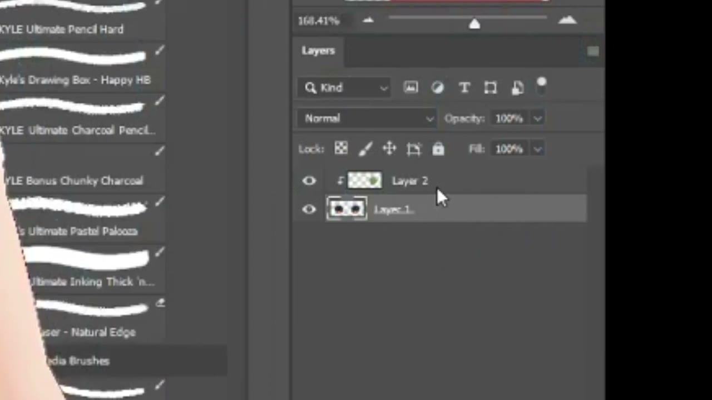
口播是按住 Alt，在 Layer 2 和 Layer 1 的接缝上点一下。点完之后 Layer 2 被剪贴到 Layer 1：上面一层的缩略图是一块绿，下面一层的缩略图仍是原来的两只虹膜。这样画在 Layer 2 上的颜色出不了 Layer 1 已经有像素的椭圆，也不会改到原来那张图。锁的那一排图标都在，但这一帧看不出 Layer 1 有没有被锁上。笔刷列表里能看到 Soft Round、Hard Round，以及名字里带 Pressure Size、Pressure Opacity 的几支。口播是选一支带压感的笔再打开压感，看不清具体点亮了哪一支。
先铺深绿，再往亮黄走，高光放在同一侧
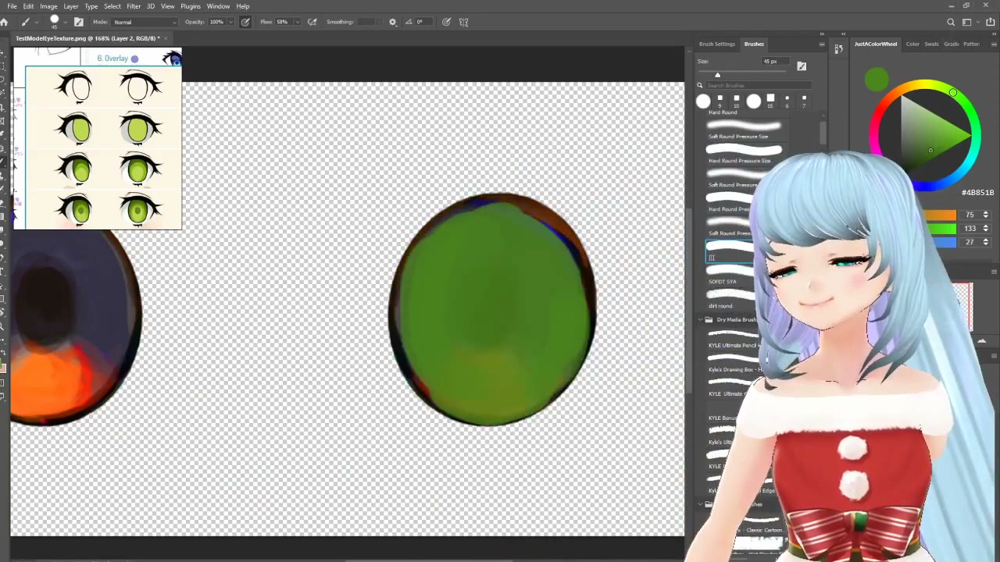
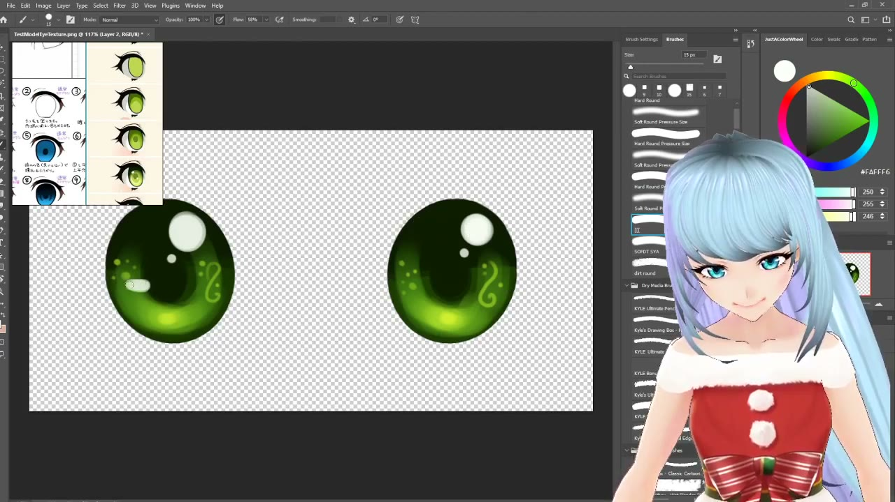
第一遍把椭圆铺满。这一下的色轮是 #4B851B，旁边读数是 R 75、G 133、B 27，是比较暗的绿。口播习惯先从深色起手，上缘和瞳孔再压深一点，中心用带压感的笔提亮。接着把颜色往黄里带，亮部那下色轮是 #ABDC28（R 171、G 220、B 40），刷在虹膜靠下的位置。靠下再点一串小圆点，一侧加一小卷绿线，两只眼睛同样不做成镜像。大高光那一下尺寸框是 25 px，收到小高光时是 15 px，颜色是 #FAFFF6。两只眼睛的大白点都落在虹膜偏右上。左眼下面另有一颗扁的小高光，右眼没有在对称的位置再复制一颗。口播说光从同一侧来，不要把一只眼睛的高光镜像到另一只。
另存第二份，不要覆盖刚导出的那张
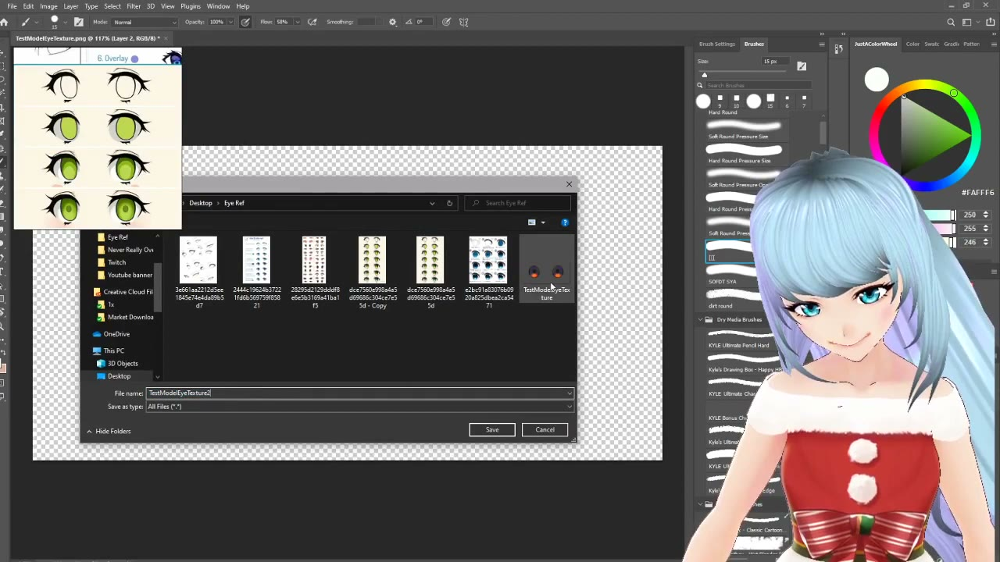
不要直接盖掉刚从 VRoid 导出的那张，口播说要留着以便退回。文件名写成 TestModelEyeTexture2。类型框停在 All Files，没有改成某一种图片格式；口播说这一份要是 PNG。关 Photoshop 时口播自己没再存工程，只留了这张图，又说平常还是应该把工程存下来。
回到虹膜，新建图层后再导入
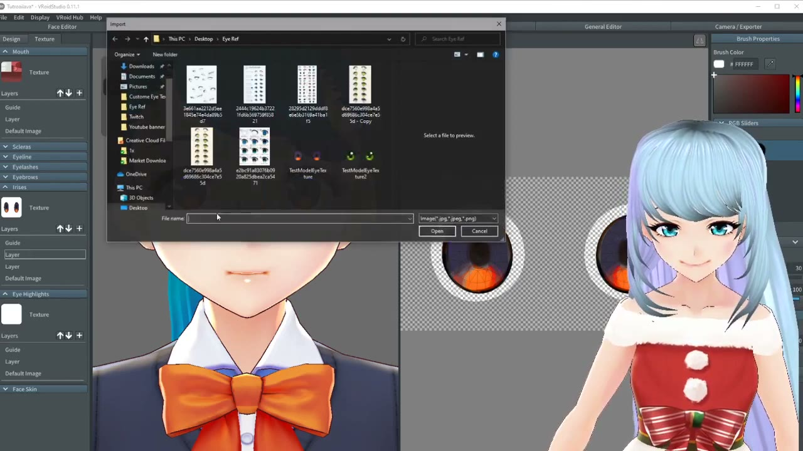
路径和导出时一样：Face Editor，Texture，Irises。图层那一排有上下箭头和加号。先点加号，多出来的一层名字就是 Layer，排在 Default Image 上面，再在这层上右键选 Import。文件夹里两张都在，要开的是 TestModelEyeTexture2，不要把橙红色的默认图又导回去。导进去之后，这一层盖住 Default Image，脸上的虹膜换成刚画的绿眼睛。口播说更稳的做法是高光不要画进虹膜，单独去画 Eye Highlights；这次已经画在一起了。
把 Eye Highlights 上的旧高光擦掉
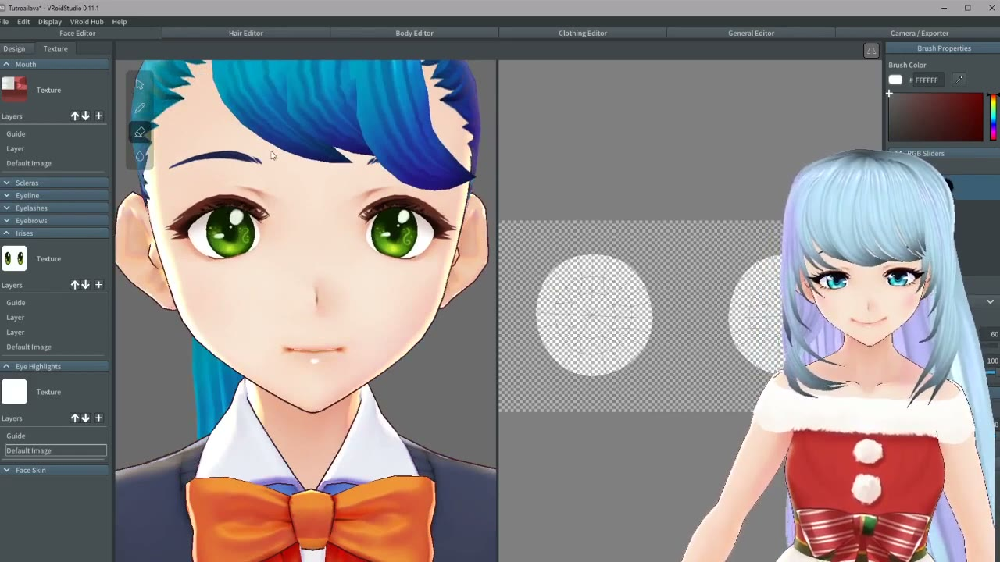
画进虹膜的白点和 Eye Highlights 这一层原来的高光会叠成两套。展开 Eye Highlights，它自己有一张贴图，先前是两个浅圆里各有一小块高光。口播说用左边竖条里的橡皮去擦。擦完之后这两个圆里只剩浅底，虹膜上自己画的高光还留着，脸上不再多出第二套亮点。笔刷色块这时是白的，但这一步用的是橡皮，不是在往上加白。
眼白用同一套列表加一笔灰
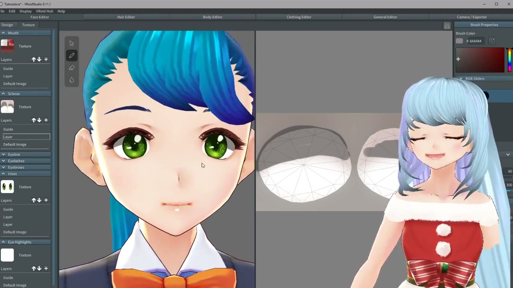
同一条列表再展开 Scleras。笔刷颜色改成 #8A8484，是一块灰。眼白贴图上沿多了一点灰，中间仍是白的，上面盖着三角线，左边图层里有一行 Guide，线是引导，不是新画的花纹。口播说这点阴影让眼白不那么平、更像二次元；又说 VRoid 的笔没有压感，眼白这种渐变更想拿回 Photoshop。阴影很轻，脸上几乎看不出一块很深的颜色。Eyeline 展开时能看到 Base Color 和 Shade Color。口播说眼线、睫毛以及脸上的其他贴图也是同一套导出再导回，这条视频里没有再做。